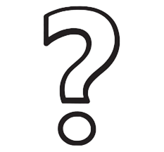

Über uns

Unser Team
Wir sind eine Gruppe von Enthusiasten, die sich für den Erhalt der Natur einsetzen.
Wir sind ein Team engagierter Menschen, vereint durch die Liebe zur Natur und den Wunsch, sie für zukünftige Generationen zu bewahren. Unser Projekt verfolgt ein Bildungsziel: Wir möchten das Bewusstsein für die Probleme des terrestrischen Ökosystems schärfen und zeigen, dass jeder zu seinem Schutz beitragen kann.

Unsere Mission
Wissen über terrestrische Ökosysteme verbreiten
Um auf Umweltprobleme aufmerksam zu machen Um Menschen zu einem verantwortungsvollen Umgang mit der Natur zu motivieren